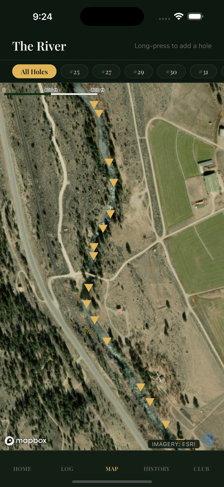
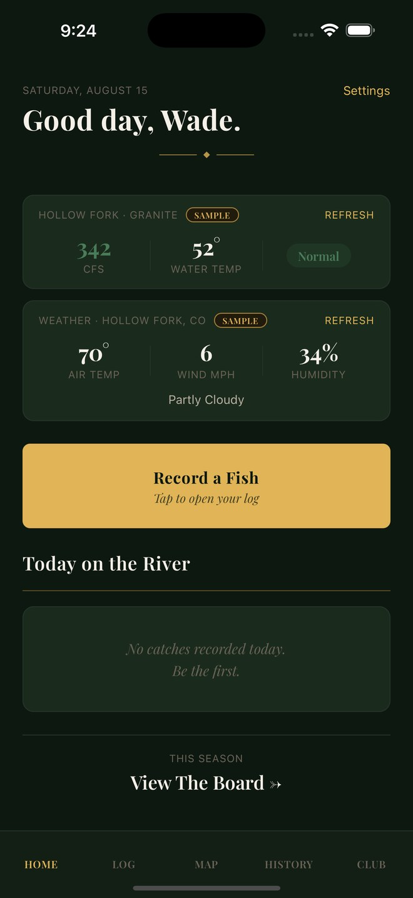
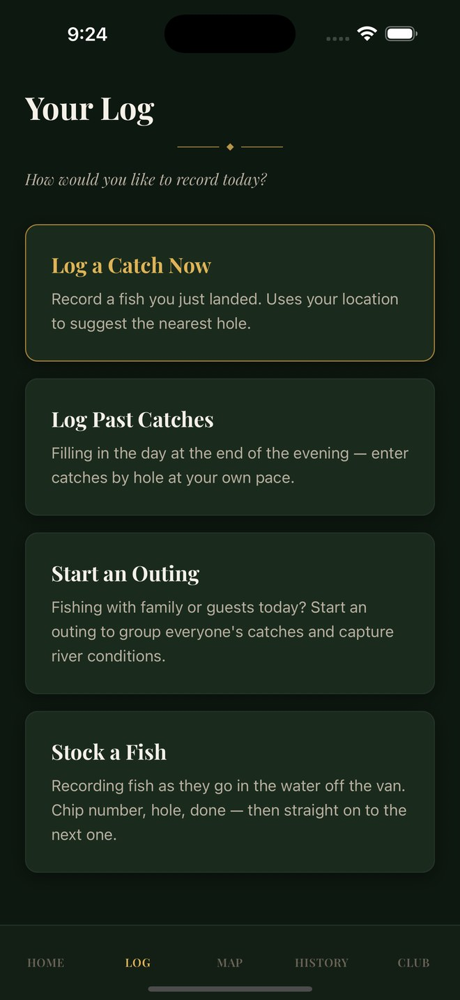
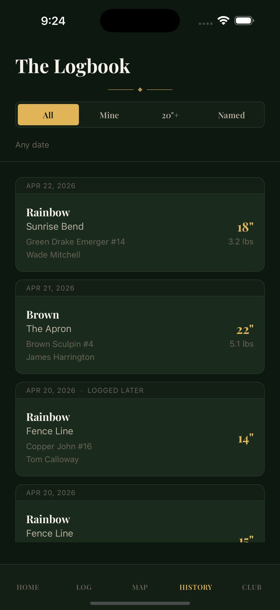
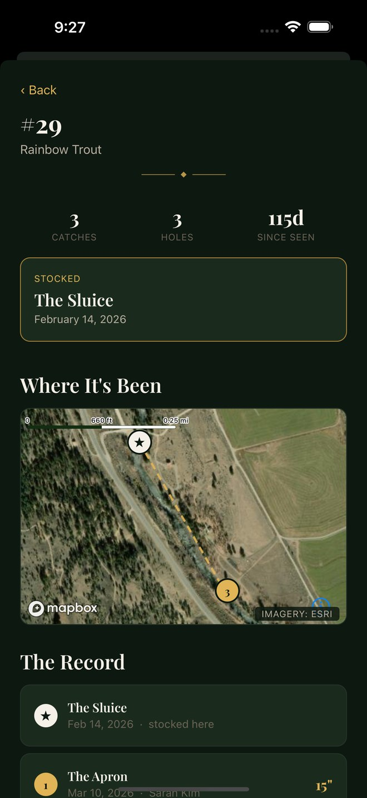

For private fishing clubs
Know your water.
Your club's knowledge lives in the lodge: in stories, in one member's notebook, in what somebody thinks they remember about the run below the bridge. Walden Hollow puts it on the record: every catch, every hole, and eventually every fish, kept privately by the club, for the club.
On iPhone now, in testing with a club on the Colorado River. Android next.


The problem
A club knows less about its own water than you would think.
Members catch fish, tell each other in the lodge, and the knowledge dies there. Which leaves the questions that actually decide how a club spends money unanswered.
Is the fishery improving?
Or does it just feel that way this year? Without a record, a good season and a good memory are indistinguishable.
Did the stocking work?
You paid for those fish. Did they survive, move, grow, or go straight downstream past the property line?
Which holes carry the water?
Which are producing, which are being over-fished, and which have quietly stopped fishing at all.
Is this the same brown?
The one that broke off at the chute last September. No logbook has ever been able to answer this.
In the water
Thirty seconds, one hand, wet.
A catch gets logged while the fish is still in the net: species, length, hole, fly. Not typed up later from memory, when the details have already gone.
- Large type and large targets, for cold hands and bright sun
- Confirmations sit where your thumb already is, so nothing needs scrolling
- Built and tested with members in their seventies, in waders

Your water
Every hole. Your names, your numbering.
The club's own map, with the names off the board in the lodge, not a public app's idea of where your river is, and not visible to anybody outside the club.
- Satellite imagery, with each hole where the club says it is
- "Nearest to me" for members who are new, or new to that stretch
- A hole's whole history: what has come out of it, and when
Conditions
The river attaches itself.
Flow, water temperature and weather come from public USGS and National Weather Service gauges and are stamped onto the catch automatically, so the record carries the conditions that produced the fish, not the conditions when somebody remembered to write it down.
- Live flow and water temperature on the home screen
- Logging a catch from last week pulls that day's readings, not today's
- Over seasons, this is what makes "the river fishes better at 120 cfs" a fact instead of a hunch

The difference
A record of fish, not just of catches.
Any app can store a list of catches. The reason to run this one is that a fish becomes an individual with a history.
When a fish can be identified, the club sees everywhere it has been caught, by whom, and how much it has grown between times. Twenty of those and you no longer have anecdotes. You have a growth curve, a movement pattern, and evidence about whether what the club is doing to the river is working.
- Every recapture, with who caught it and where
- Growth between captures, measured against a consistent reference
- Movement between holes, across seasons

Where this is going
Making the tag obsolete.
"Individual fish identification and recognition is an important step in the conservation and management of fisheries."
Applied Sciences 11(19):9039, 2021
Knowing which fish, not just how many, is what turns angling records into fisheries science. Growth, movement and survival after stocking are all questions about individuals. Today, identifying an individual fish means implanting a PIT chip. That is invasive, it only covers fish the club has physically handled, and it caps the study at whatever the club has time to tag.
Trout already carry a fingerprint.
The spot pattern on a brown or rainbow trout's flank is unique to that individual and stable over years. If it can be matched from a photograph, the fish is already wearing its own tag. No handling, and every fish caught becomes a tracked individual rather than only the dozen that were chipped.
That is why the chips exist in version one: a chipped fish photographed twice is a labelled pair, and labelled pairs are the only way to prove a photo matcher actually works. The hardware is scaffolding. It is there to make itself unnecessary.
The evidence this is built on
Photographic identification of individual fish is a published method in fisheries science, not a claim we invented. Three findings shaped what the app does.
"One of most frequently used methods involves capturing and tagging fish. However, these processes have been reported to cause tissue damage, premature tag loss, and decreased swimming capacity."Photo Identification of Individual Salmo trutta Based on Deep Learning, Applied Sciences 11(19):9039, 2021. doi:10.3390/app11199039
So the tag is the problem, not just the cost. This is why the roadmap ends with photography replacing the chip rather than supplementing it. The same study identified individual brown trout from video at 94.6% precision and 74.3% recall, on a dataset of 39 fish across 288 frames, which is also why we treat a shortlist reviewed by a person as the honest output rather than an automatic answer.
"In both populations, all annotated images ranked the first ranking score, indicating perfect recognition. The long-term analysis revealed a high performance in recognition of individuals because 75% of the images of fish at the age of 2 years were successfully matched with images of the same fish at the age of 3 years."Colihueque N, Estay F (2025) Photo-identification of individual rainbow trout, Oncorhynchus mykiss, using the flank spot pattern. Acta Ichthyologica et Piscatoria 55: 181–190. doi:10.3897/aiep.55.151044
So the flank pattern persists across a year of growth, and the matching needs no training data. That study scored spot patterns with I3S, an interactive identification system used on whale sharks and sea turtles for two decades. Our matcher works the same way first, because a point-pattern comparison can be evaluated on the few dozen fish a single club actually has, where a neural network cannot.
"We proved that the methodology can be used as a non-invasive substitute for invasive fish tagging. The methodology can be adapted to any fish species with dot skin patterns."Automatic identification of individual Atlantic salmon (Salmo salar) by dot skin patterns, tested on 328 individuals at 100% accuracy. Scientific Reports 11, 2021. s41598-021-96476-4
So the substitution works at population scale, under controlled photography. Controlled photography is the condition, and it is the whole reason the app puts a trout outline on the camera and refuses a frame that is too small, too angled or out of focus. The guide is not decoration. It is the experimental control.
Where the evidence stops
These results come from small populations under controlled photography, mostly over months rather than years. A 2025 review in Reviews in Aquaculture still lists long-term and large-population performance as open questions. Nothing in the literature was tested on photographs taken one-handed by an angler standing in a river, which is exactly our condition.
So we run it as research
Guided capture ships today and builds your club's photographic record from the first season. The matching is validated against chipped-fish ground truth with an accuracy bar it has to clear, including a false-match rate near zero. A confident wrong answer would corrupt the very record the fishery science depends on.
What it means for the river
State biologists survey small streams roughly once every five to ten years. A club photographing every fish it catches produces continuous, individually-tracked recapture data on one reach: growth rates, movement, and survival after stocking. That is conservation evidence, gathered by anglers, at no cost to the fish.
Private club, private data
Your water does not appear on anyone else's map.
Members joined a private club. Their catch locations becoming public is a matter of trust before it is a matter of policy, so the product is built so that it cannot happen by accident.
- The club's holes and coordinates are visible only to its own members
- Every club's data is walled off from every other club's
- Nothing is sold, shared, or used to train anything
- Even our own screenshots and demos run on an invented river, so the real water is never published
Any data leaving the club is the club's decision.
There is real scientific value in what a club records. State fisheries biologists survey small streams roughly once every five to ten years. A club running this produces continuous, individually-tracked recapture data on its own reach.
If a club wants to contribute that to a research partnership, we will help. It is opt-in, it is anonymised as to location, and it never happens by default.
For clubs
We set it up. Your members just fish.
Nobody on your board should have to administer software. Onboarding is done with you, on your water.
Your river, mapped
We put every hole on the map with your names and your numbering, from your own records, and set the app to your gauge station.
The starter kit
Measuring mats so length is comparable between members, and PIT chips and a reader for the first tagged fish, the ground truth the fish record is built on.
Members added for you
We create the accounts and walk the first few through it. The app has a guided tour over the real screens and a help section written in plain English.
A season report
At the end of the season, what the record actually says about your water. The report a board can put in front of its members.
Pricing
The club pays. Not the member.
A fishery record that only half the members contribute to is not a fishery record, so it is never a per-member subscription that somebody can decline.
The club record
Billed to the club. Everything in the app for every member: logbook, map, conditions, the fish record, and both platforms.
- Unlimited catches and holes
- Guided identification photography
- End-of-season report
Setup & starter kit
Mapping your holes, configuring your gauge, creating member accounts, and the measuring and tagging equipment.
- Tapers with club size
- Hardware included
- On-water onboarding
What you never pay for
- No advertising, ever
- No selling or sharing your club's data
- No per-member upsells inside the app
A club's record belongs to the club. If you ever leave, we export it and hand it over.
Questions
What boards ask us.
Our members are not technical. Is this going to be a problem?
It is the constraint the whole app was designed around. The first club's primary tester is a retired man in his seventies, in waders, in bright sun, with cold wet hands. If he cannot do it, it gets changed. That is not a slogan, it is how the release notes read.
Does the fish identification actually work yet?
Not yet, and we would rather say so. The guided photography ships today and starts building your club's record from the first season, which is what the matching needs to exist at all. The matching itself is being validated against chipped fish with a defined accuracy bar it has to clear before it goes near a member's screen. Until then, identification is done by hand against the chip.
Do we have to chip fish?
For now, to identify individuals, yes. That is the honest answer and it is also temporary. The tagged fish are what prove the photographic matching works, and as the photographic record of your river fills in, the tagging tapers off. The equipment is included in setup.
Could our water end up on a public map?
No. Hole locations are visible only to members of your club, each club's data is walled off from every other club's, and nothing is shared or sold. Our own marketing screenshots and demos run on an invented river specifically so that no real club's water is ever published, including our first club's.
What happens to our record if we stop paying?
We export it and give it to you. The club's record belongs to the club, and it should not be a hostage.
Is there an Android version?
It is built and not yet released. iPhone is in testing with our first club now; Android follows. It is one app on both, not a cut-down second version.
See it yourself
Open the sample club.
There is no public sign-up, because a club's record is a club's business. So the app carries a complete demo instead: a working club on a river that does not exist, with every feature reachable, right down to the administrator screens.
demo@waldenhollow.com
password
Or tap “Just looking? Open the sample club” at the bottom of the sign-in screen, which does the same without typing.
The credentials are published deliberately, and they are safe to publish because the account does not exist. The app recognises them before it contacts any server and then runs on invented data built into the app, so a demo visitor can rename every hole on the river and there is nothing to deface: nothing leaves the device and nothing survives closing the app.
Get in touch
Tell us about your water.
We are onboarding a small number of clubs so that each one gets set up properly. If your club keeps a river and wants to know what is actually happening in it, write to us.